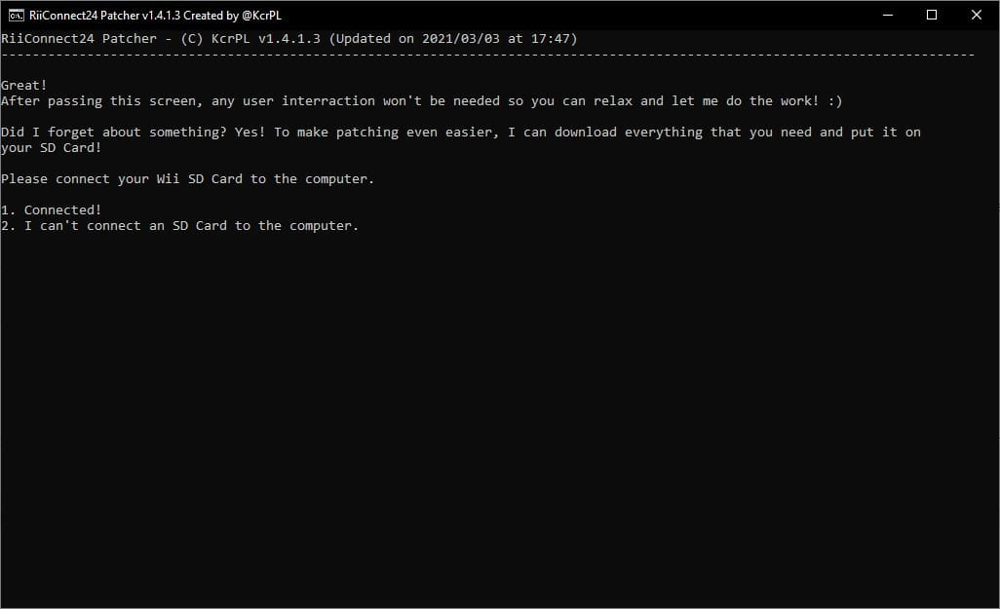
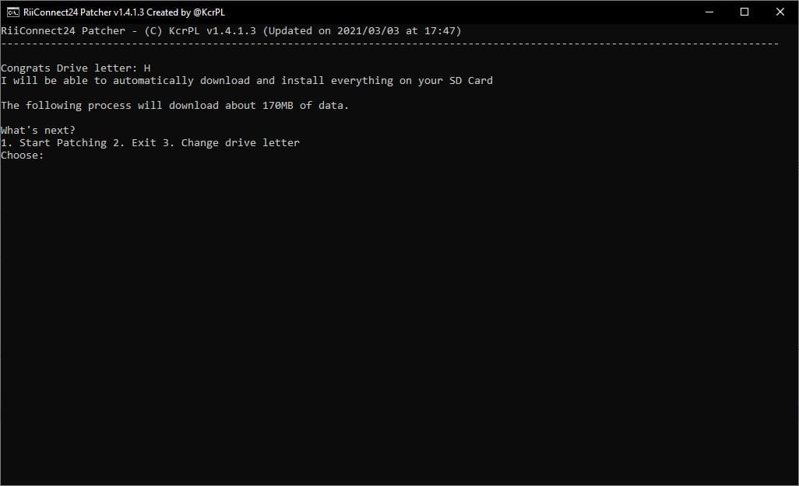

RiiConnect24 vWii 가이드
튜토리얼에 관한 질문이 있다면, Wii Mini 해킹 디스코드 서버 에 가입하거나(권장) [email protected]에 이메일을 보내세요.

Guide to installing RiiConnect24 on vWii (Virtual Wii on Wii U).
Since certain features found in the original Wii are not present in the vWii, we can only partially utilize RiiConnect24. See what’s currently working for details. {: .notice–warning}RiiConnect24 allows you to use discontinued services from WiiConnect24, which include the News, Forecast, Everybody Votes, Nintendo and Check Mii Out Channel, along with Wii Mail.
This guide is for vWii (Wii Mode on Wii U) only.
- Follow this tutorial if you’d like to install RiiConnect24 on a Wii.
- Follow this tutorial if you’d like to install RiiConnect24 on Dolphin Emulator.
DO NOT INSTALL RIICONNECT24 ON A WII MINI! It will not work and it will brick the system.
경고
저희는 어떤 방법으로든 기기를 벽돌시키거나 손상시키는데에 있어 책임이 없습니다. 이 가이드를 정확히 따르면 문제가 없을겁니다.
Do NOT perform this guide on any other console than the vWii (Virtual Wii on Wii U). If you’re looking for instructions for a Nintendo Wii, use this guide. If you’d like to perform this guide on the Dolphin emulator, use this guide instead.
필요한 것
- SD 카드 및 USB 드라이브
- 컴퓨터
- A Wii U console with an Internet connection that’s capable of launching the Homebrew Launcher (either via the web browser exploit, Haxchi or Coldboot Haxchi). If you do not have a softmodded Wii U console, please follow wiiuguide.xyz, as well as the virtual Wii modding guide and then come back.
- A Nintendo Network ID (NNID) linked to your Wii U
- RiiConnect24 Patcher (Windows, Mac and Linux)
After following the above linked guide, you should have:
- A vWii NAND backup and keys (keep these stored safely!!)
- The Homebrew Channel installed
- d2x cIOS installed (IOS249, IOS250 and IOS251)
- IOS80 patched
방법
섹션 I - 패쳐 실행하기
If you can’t run RiiConnect24 Patcher, please join the RiiConnect24 Discord server (recommended) or e-mail us at [email protected] for further assistance.
- 상단의 링크를 클릭하여 패쳐가 있는 깃허브 페이지로 이동하세요.
- Windows에서
RiiConnect24Patcher.bat을 다운로드하거나 Unix 시스템에서RiiConnect24Patcher.sh를 다운로드하세요 - On Windows run
RiiConnect24Patcher.bat. On Unix systems, open Terminal and typebash, then dragRiiConnect24Patcher.shinto the terminal then press enter. It should look like this:bash RiiConnect24Patcher.sh. - 1을 눌러 “
Start“을 선택하고 선택지를ENTER키로 확인하세요. (NOTE: These screenshots are from the Windows version of the patcher.)
- Select the device you’re patching for.

- For this guide, choose “
Install RiiConnect24 on your Wii”
- Choose “
Express (Recommended)”. It will give you everything you need.
- Select your region.

- While you’re at it, RiiConnect24 Patcher can additionally download some other optional channels that do not use RiiConnect24.
[X]represents the options that selected. Just press 5 andENTERif you’re not interested.
- Connect your SD Card or USB Drive to your computer and select “
1”.  - 기기가 성공적으로 인식되면, “
1“을 누르세요. If not, make sure there’s a folder calledappson your SD Card or USB Drive and try again.  - Be patient…

- After it’s done, we would appreciate if you take a minute to send anonymous feedback to us. If you don’t want to, close the patcher. All the files should already be on your SD Card.


- If it did not copy everything automatically to your SD Card or USB Device, copy the
WADandappsfolder next toRiiConnect24Patcher.batto your SD Card or USB Device.
Section II - Installing WADs
You will now install the patched IOS and Channel WADs that are required to use RiiConnect24.
- Put your SD card or USB drive in your Wii U.
- Launch the Homebrew Channel on your Wii U.
- Wii Mod Lite를 실행하세요.
- Wii 리모컨의 +컨트롤 패드를 사용하여,
WAD Manager를 찾으세요. 그 뒤wad폴더로 이동하세요. - Highlight all the WADs in the folder by pressing the + Button to select them. When all of the WADs are selected, press A twice to install the WADs.
- If you get an error saying a title with a higher version is already installed (error -1035), go back to the WAD selection menu and press the - Button on the highlighted WAD to uninstall it, then try installing it again.
- 설치가 완료되고 나면, HOME 버튼을 눌러 홈브루 런처로 되돌아가세요.
섹션 III - 16:9 화면비를 위한 43db 패치 (선택)
- Launch ww-43db-patcher and wait for it to complete.
If you install a theme, you will have to run the ww-43db-patcher once more.
섹션 IV - RiiConnect24 사용하기
After following the above sections, you’re almost ready to utilize RiiConnect24 on your Wii U. You just need to perform the following steps every time you boot into vWii.
- On the Wii Menu, launch the ConnectMii channel.
- This will enable the WiiConnect24 and Standby Connection flags required by the WiiConnect24 Channels.
- Launch the WiiConnect24 Channels.
- You should now be able to utilize all of the WiiConnect24 Channels you have installed.
무엇이 현재 작동하나요?
The following RiiConnect24 services are working on the vWii:
- Forecast Channel
- News Channel
- Everybody Votes Channel
- Nintendo Channel
- Check Mii Out Channel / Mii Contest Channel
The following RiiConnect24 services are not working on the vWii:
- Wii Mail (most functionality does not exist on vWii)
- This includes sending/receiving mail to/from friends.
Most services that utilize WiiConnect24 will be able to work if you leave vWii running for several hours. There’s no standby mode on the console.